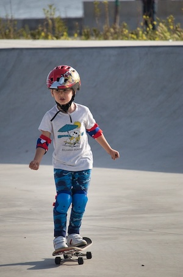

images
Answer the following questions on your page:
What kind of photos are good to encode using JPEG?....photos with many colors and complex details that need a lot of attention.
What kind of photos are good to encode using GIF?... cartoons and simpe graphics
What is unique about the PNG format?...PNG is unique because it supports lossless compression and transparency (including partial transparency with alpha channels). Its ideal for images that need crisp edges, text, or overlays without losing quality.
How do you resize your photo to the size it should be displayed?... for me on my mac I open the photo in preview and then go to tools and change the height and width
Why should you resize photos using photo editing software instead of resizing it using CSS?....Because resizing with software actually reduces the file size, making the image load faster. CSS resizing only changes how big the image looks on the screen, but the browser still loads the full-size file, which slows down performance.
